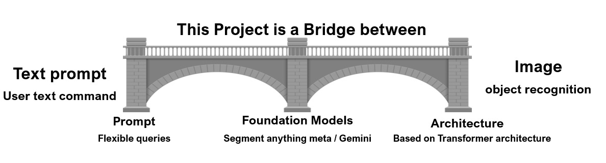
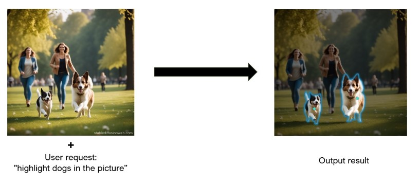
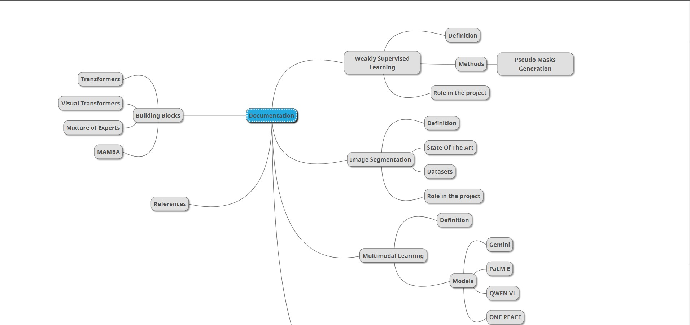
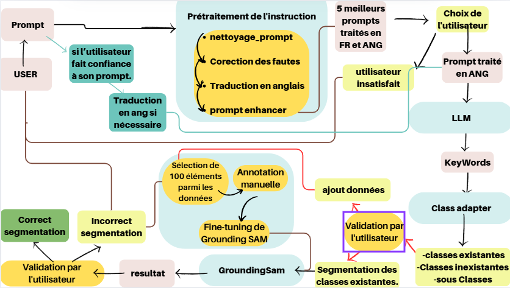

Introduction
General Introduction
This project aims to build a bridge (a connection) between users’ text request and object detection inside an image.
- First input: Users’ text request (query or prompt) about an object;
- Second input: The image;
- Output: The requested object, filtered and highlighted (segmented).
For example: the user has an image of people playing in the park, and wants to filter out dogs in the picture.
In order to do so, the user inserts the picture and writes this query: “highlight dogs in the picture”
The output would be a processed images where dogs are highlighted
How were we able to do that ?
Building from scratch a model, that is trained on a dataset according to the field of interest.
What’s new about the project ?
Preparing an image dataset for training a model on segmentation is a time and energy consuming task, this process is done manually where one has to draw a contour on each object and label it.
The bridge, the connection or the model we are building from scratch uses FOUNDATION MODELS for training (look at like a human sitting on a computer, drawing contours and labeling each object on the image). This enable optimization of time and labor resources and open doors to the use of large-scale datasets for training and application purposes using flexible prompt.
This project goes way beyond the scope of detecting dogs in parks and may be used to perform object detection on any image in any field.
Project building strategy:
Modular components
Manual implementation: Each component is implemented manually for pedagogical reasons
Build to last strategy : Simple, accessible documentation with practice examples
Accuracy-oriented: Replacing manually implemented components with imported frameworks for more accuracy
Documentation axes
Porject Introduction
This project aims to enhance an existing platform for object segmentation in images based on user prompts. The solution enables users to submit textual instructions to automatically detect and highlight objects within an image.
As part of its evolution, two key modules are being developed:
Keyword Filter: This component leverages advanced natural language processing (NLP) and (LLM) techniques to automatically extract the objects or classes mentioned in a prompt. It effectively translates user instructions into actionable elements for image segmentation.
Human Feedback Loop: This interactive mechanism allows users to validate or adjust the proposed results. The collected feedback is used to continuously improve the system’s accuracy and relevance.
The overall objective is to make the platform more efficient, intuitive, and aligned with real user needs, while fostering effective human-machine collaboration in visual segmentation tasks.
Keyword Extraction Pipeline
To achieve this, the workflow begins with a preprocessing phase in which the user’s prompt is analyzed using a first large language model (LLM). This initial step aims to refine, normalize, or reformulate the prompt in order to ensure better semantic clarity and alignment with the expected task.
The output of this preprocessing phase then serves as input for a second module, which uses another specialized LLM to perform keyword extraction. This model is designed to identify and isolate the relevant objects or classes mentioned in the prompt, which are essential for guiding the image segmentation process.
This two-stage architecture—combining prompt preprocessing and targeted keyword extraction—ensures higher precision and robustness in interpreting user instructions, laying the foundation for more accurate and context-aware visual segmentation.
